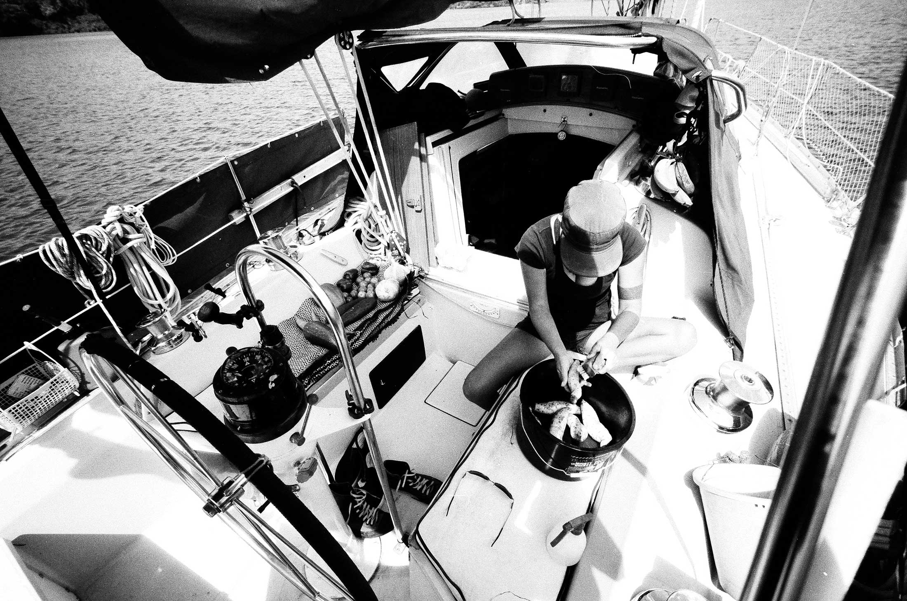
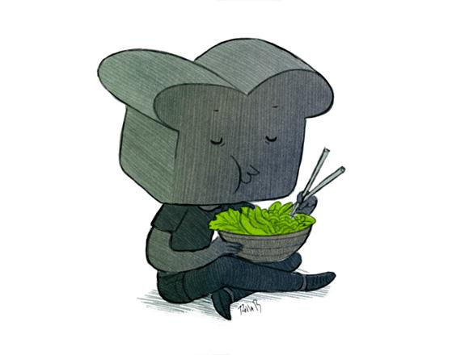

About
We started Grimgrains to teach ourselves how to cook. This blog, which now doubles as a travel diary, helps track our habits as we adapt to the localy available produce. All of these recipes are plant-based, and tree-nut free.
We are Rekka Bellum(illustrator) and Devine Lu Linvega(developer), living on a small sailboat somewhere on the shores of the Pacific Ocean. Hundredrabbits is the name of our floating studio, we write softwares and recipes as we sail around the world looking for new ingredients.
This website showcases our favourite creations, along with hand-drawn illustrations for each ingredient. The pages were generated entirely in the classic C99 programming language, and the sources can be found on Github.
If you have any question, you can find us on Mastodon.
Copyright policy
You may adapt our recipes, but a link back or mention would be nice :).
The assets of grimgrains.com, unless stated otherwise, are ©hundredrabbits. Photographs, drawings or text should not be used, published, reprinted or modified without our permission. The source code of the website is under the MIT License.
All recipes featured on grimgrains.com are our own, unless stated otherwise. The information is for food enthusiasts like ourselves, we do not claim to be all-knowing. Nor are we health professionals. Our views are our own, we encourage openness and curiosity whenever possible.
Privacy statement
We reserve the right to alter the blog at our own discretion. Words addressed to us in private will not be shared, nor will we use any of it in future publications.